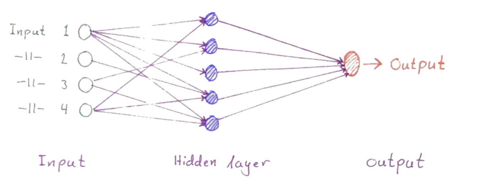
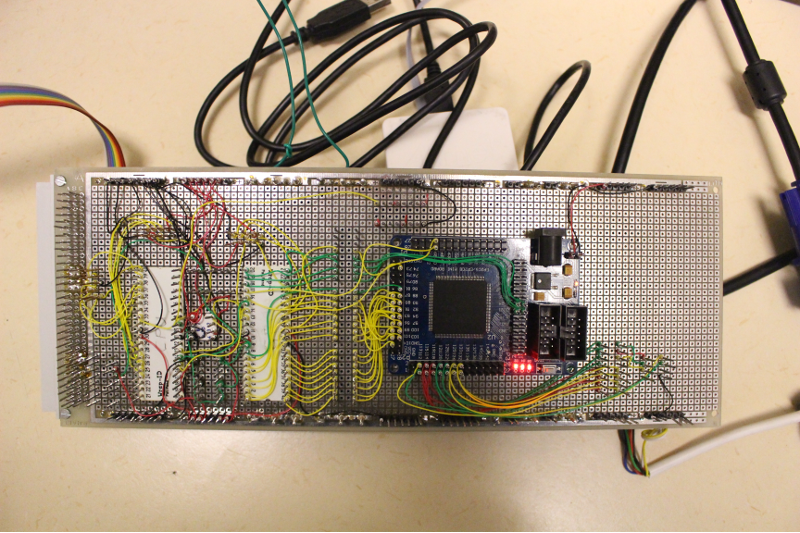
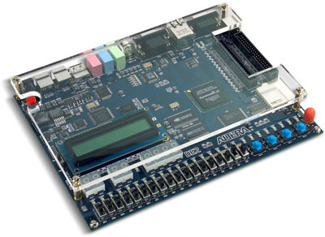
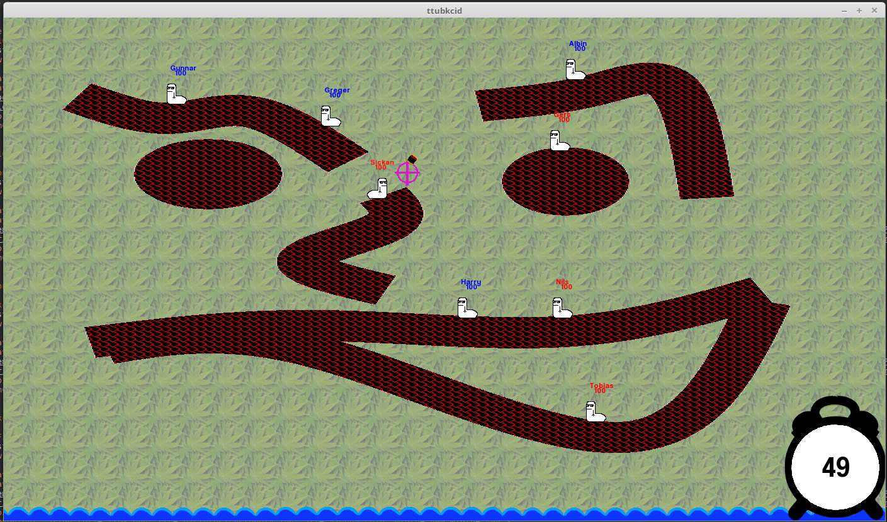

Ett eget projekt som jag pysslar med. Projektet är att bygga ett bibliotek som ska hantera enkla Artificiella
Neurala Nätvärk. Implementerat i c++.

ATmega SBRC
[TSIU51]
[Grupparbete]
I kursen Mikrodatorprojekt jobbade 4 st med ett hårdvaruprojekt. Målet var att få minst två mikroprocessorer
att kommunicera för att utförande av en uppgift. Vi skapade ett koppplingsschema för hårdvaran och kopplade
sladdarna efter det, designade mjukvaran med JSP-diagram och kodade i assembly och VHDL. Vi valde att göra
ett sidescroller rymdspel som går ut på att samla poäng som spelaren får genom att överleva så länge som möjligt
och förinta fiender.

Conan Soundboard
[TSIU03]
[Grupparbete]
I kursen systemkonstruktion jobbade 6 personer med att designa en kretskonstruktion och realisera den. Konstruktionen
gjordes på Altera DE2-115 development board. På chipet sitter en Field Programable Gate Array (FPGA) bestående
av många logiska grindar som är programerbara och på så vis gör FPDA:n det möjligt att beskriva en hårdvbara
(vår kretskonstruktion). Kodspråket VHDL användes för att beskriva hårdvaran, Modelsim för att simulera den.

Ttubkcid Showdown
[TDDI22]
[Grupparbete]
I kursen objektorienterad problemlösning jobbade 4 personer med att genomföra ett mjukvaruprojekt. Vi valde att
konstuera ett spel som liknar det klassiska spelet worms. Implementerades i c++ med hjälp av SFML.

Ray Fighters
[TDDI02]
[Grupparbete]
I kursen programmeringsprojekt jobbade 4 personer med att skapa en mjukvarudesign och realisera designen. Vi
valde att desina ett fighting spel för två personer. Implementerades i c++ med hjälp av SFML.